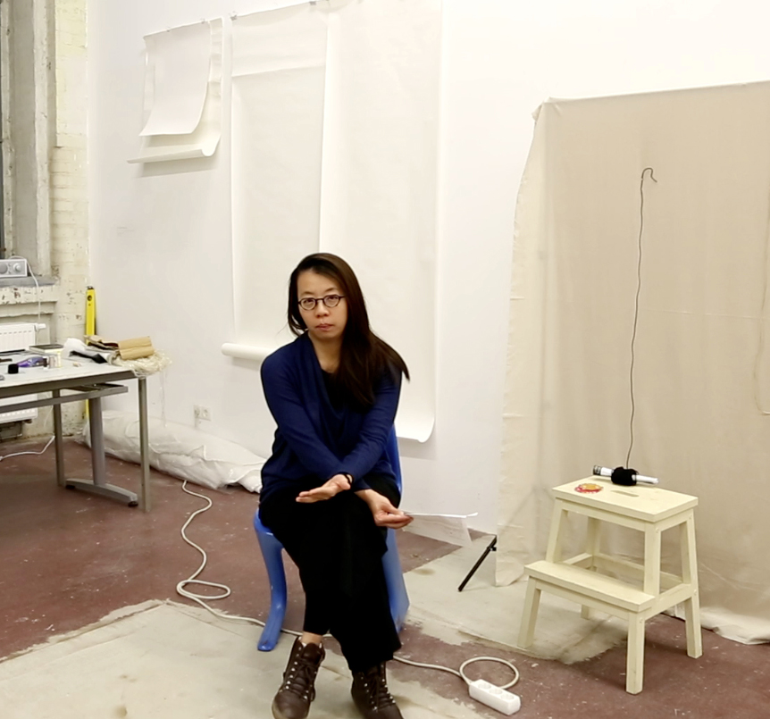
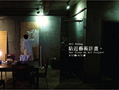
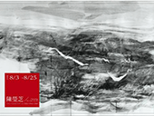
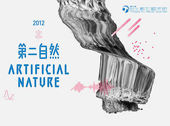
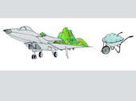

| NEWS | ABOUT | EXHIBITION | EVENT | ARTIST | LINK | CONTACT | PUBLICATION | tamtamART TAIWAN |
tamtamART is an association for the advancement of Taiwanese Contemporary Art in Germany ( TAMTAM 8 |
|---|
|  | 傅雅雯YA-WEN FU is a media artist based in Germany and Taiwan and has her Meisterschüler and Diplom in Media Arts from the Academy of Fine Arts Leipzig Germany. and her Bachelor Fine Arts is from the National Taiwan University of Arts, Taipei, Taiwan. She is a Media Art artist and having curatorial experiences, she has joined tamtamART art association as a director since 2009. |
|---|---|
 |
洪韵婷YUN-TING HUNG born in Taiwan, works and lives in Kaohsiung, Taiwan. She received her degree MFA in 2016 after completing postgraduate studies at National Taiwan University of Arts, followed by the Meisterstudium at Kunsthochschule fuer Bildenden Kuenste in Dresden, supervised by Prof. Eberhard Bosslet. Currently she works as an associate professor at the Department of Fine Arts at Chang Jung Christian University in Tainan. In both art-making and curatorial practice, she has recently focused on current social and cultural characteristics such as speed, mobility and non-place in daily life. |
 |
黃玄HUANG HSUAN born 1983 in Taiwan. She starts learning the violin when she was young. In 2006 she decided to come and work thetheater in Germany, and she entered the class of stage design with Prof. Hartmut Mayer in the Berlin University of the Arts (udk). |
ARTIST SUBMISSIONS
TO BE CONSIDERED FOR AN EXHIBITION
Please send 10-20 images(either print-outs, a CD or a DVD), a resumé, artist statement and any press clips to info@tamtamart.de |
|---|
 |
|
 |
 |
|
|---|---|---|---|---|
Elsewhere is Nowhere |
Elsewhere is Nowhere |
LOOP # 05 |
Community of Ninja |
|
2013
 |
 |
 |
 |
 |
|---|---|---|---|---|
Cynetart Festival |
Twilight Project |
「command＋N」 |
Es ist ein Loch |
Get Close – An Art Project |
|  |  |
 |
 |
|
Ying-Chih Chen Solo |
Creditable Worth |
(CON)TEMPORARY |
建小屋-台南系列 |
|  |  |
|||
|---|---|---|---|---|
Artificial Nature |
évidemment |
Yard |
Twice Upon A Time |
Viaggio In Italia |
 |
 |
 |  |
|
Gaze Upon My Gaze |
⻘青春嶺 |
Scene On The Wheel |
Aire de Taiwan |
Weichsel Straße 8, 10247 Berlin- Friedrichshain, Germany |